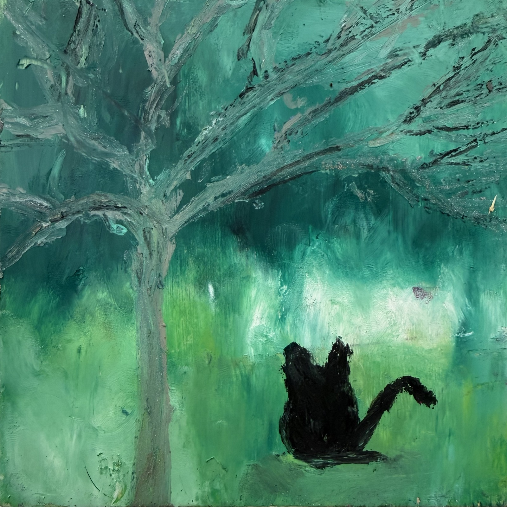
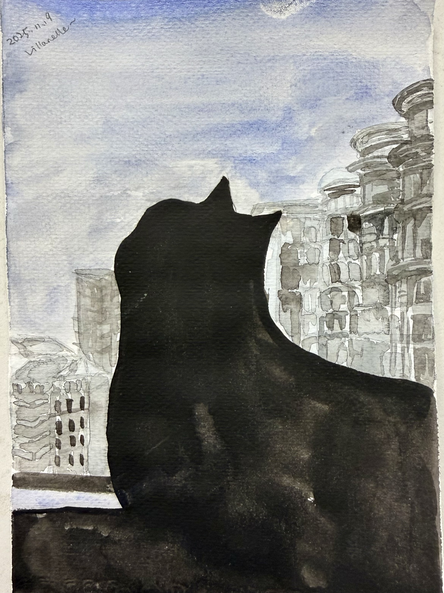
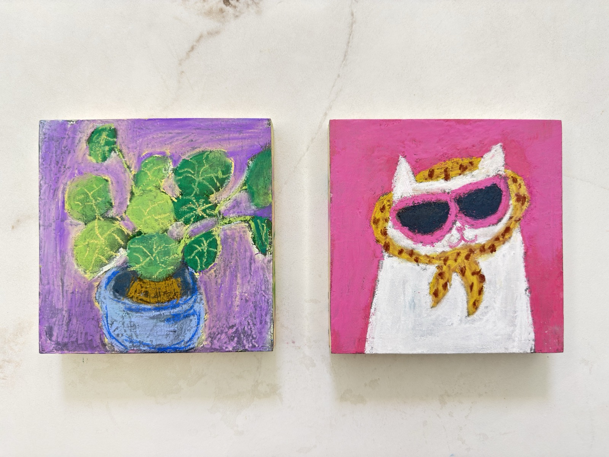
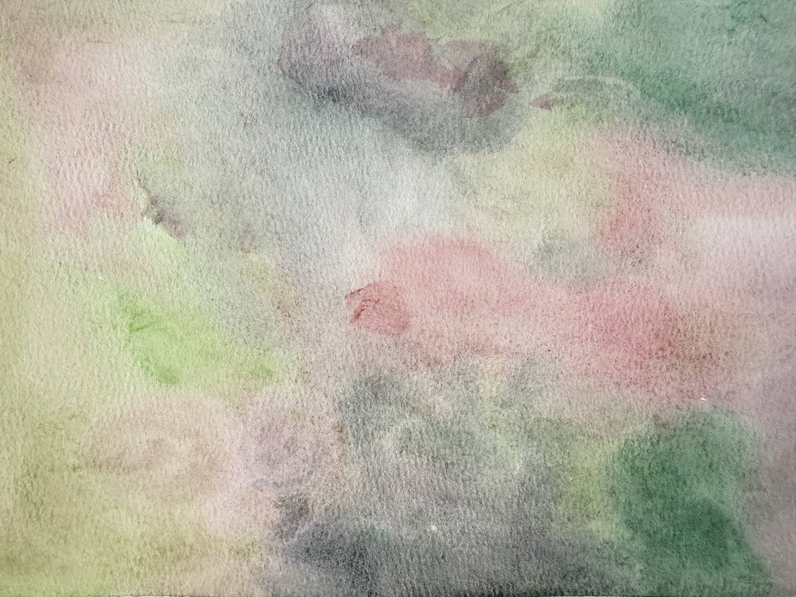
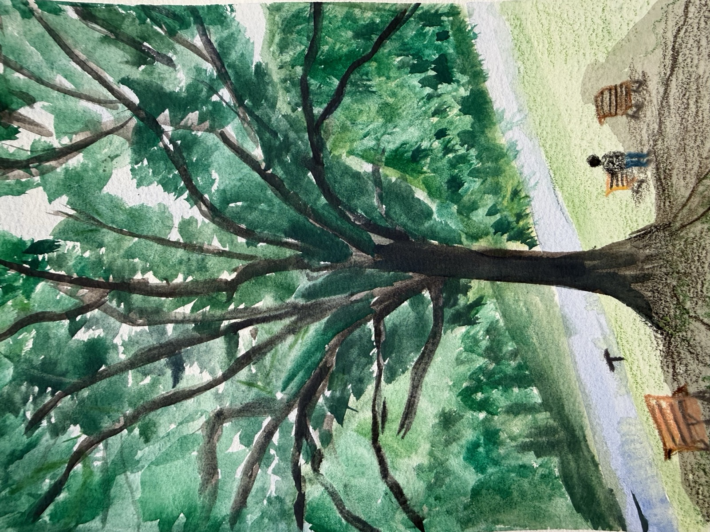
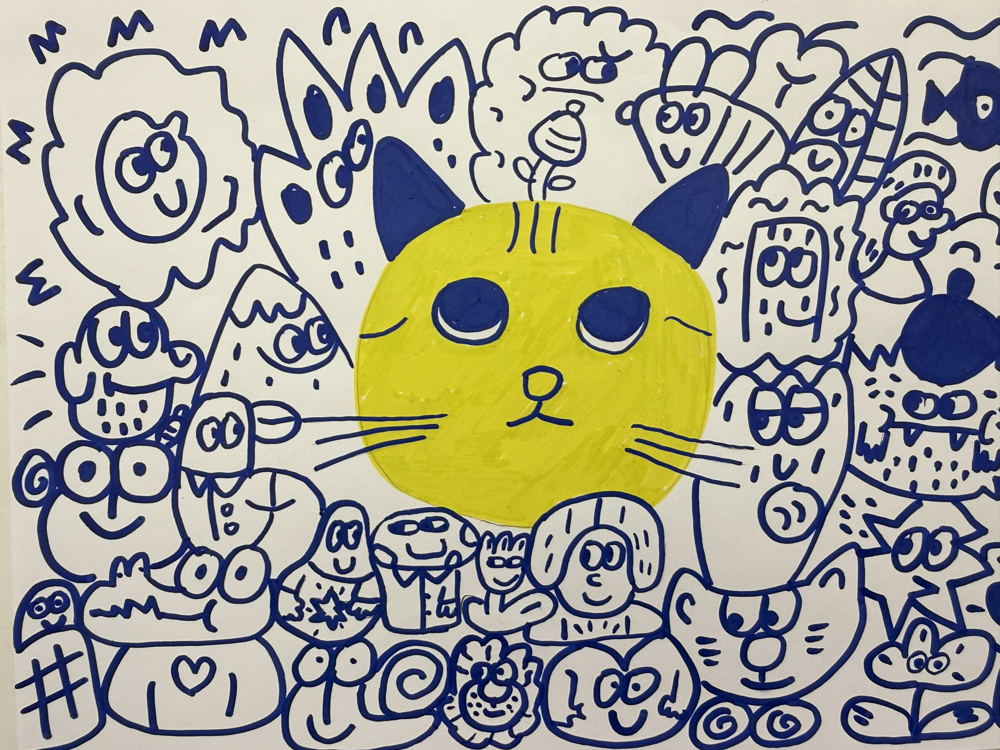
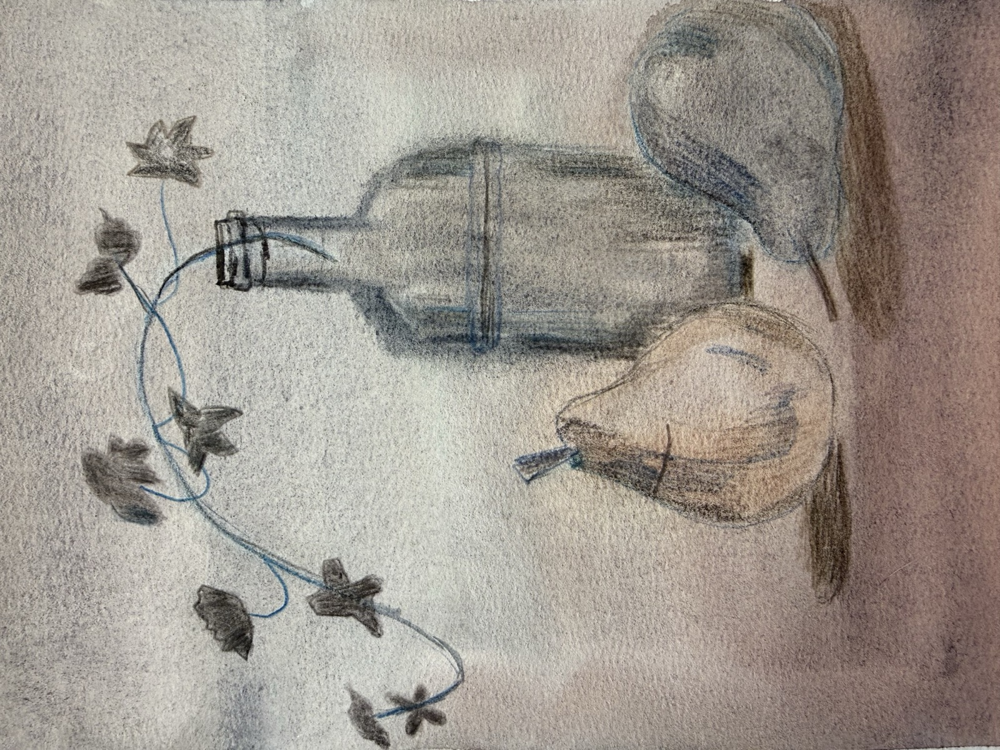
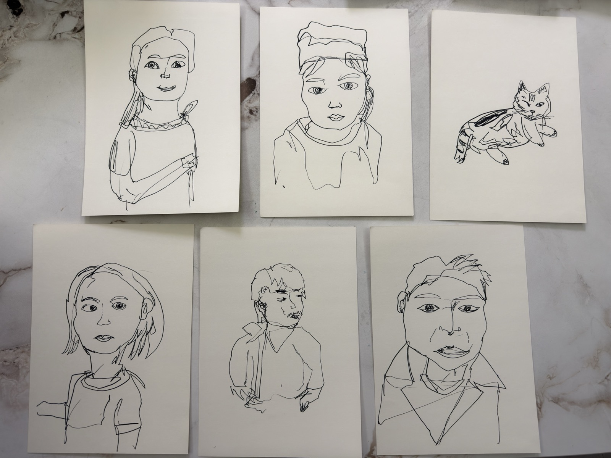
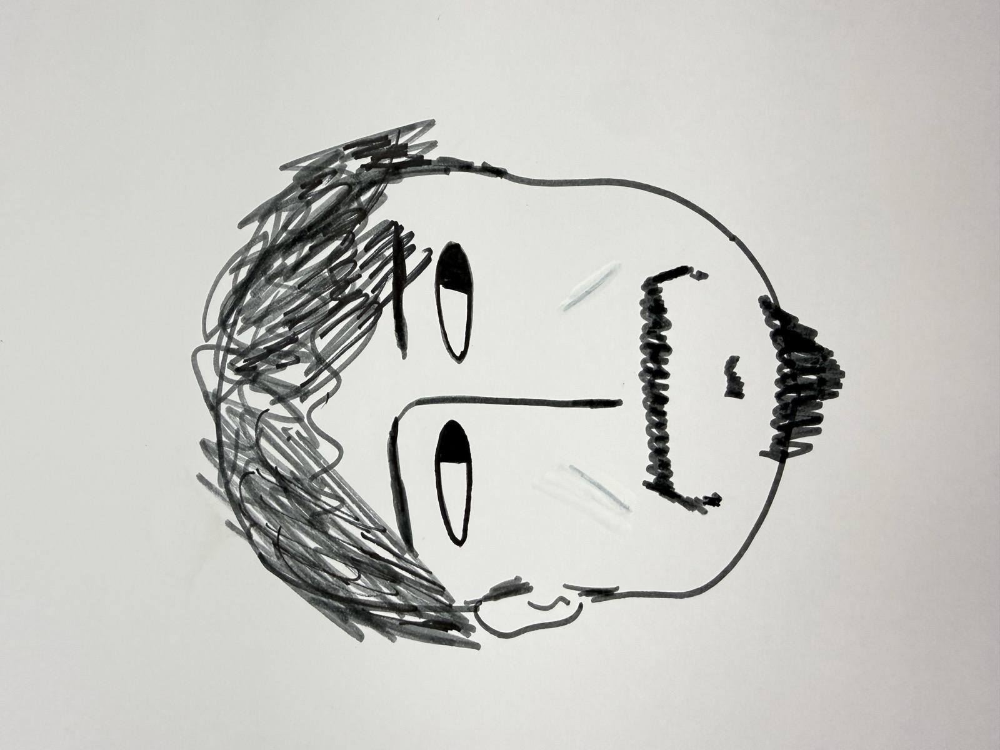

Artist · Illustrator · Visual Storyteller
Somewhere between the precise and the wild,
between observation and imagination.

Oil on canvas
A black cat rests in quiet contemplation beneath bare branches, enveloped in washes of deep emerald and teal. The thick, gestural brushwork dissolves the boundary between figure and atmosphere.








Villanelle works across painting, watercolor, ink, and illustration—moving freely between mediums the way a conversation shifts between languages.
The work is characterised by an instinct for mood over precision: atmospheric oil paintings sit alongside bold pop illustrations; delicate watercolour washes give way to raw, confident line drawings. Recurring motifs—cats, trees, the human face—appear and reappear, each time seen differently.
Whether it is the emerald stillness of a cat beneath a bare tree, or a riot of doodled characters crowding around a bright yellow face, every piece carries the same signature quality: an unforced sense of life, observed with warmth and rendered without pretension.
Villanelle is open to collaborations with brands, galleries, publications, and cultural organisations that value originality and artistic integrity.
Custom artwork, product illustration, packaging design, and visual identity projects that bring a hand-made, one-of-a-kind quality to your brand.
Illustration for editorial features, book covers, zines, and print media. Work spans from delicate watercolour to bold graphic illustration.
Gallery exhibitions, pop-up shows, art licensing for merchandise, and limited-edition print runs. Originals and reproductions available.
Bespoke portraits, pet portraits, landscape paintings, and custom pieces. Each commission is a conversation between artist and collector.
For partnership enquiries, commissions, or to discuss a collaboration, please reach out.
hello@villanelle.art